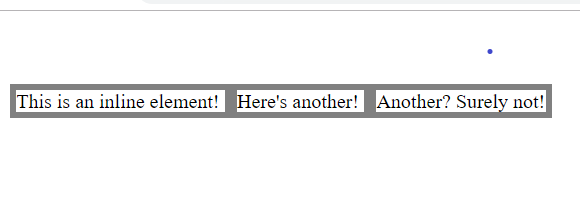
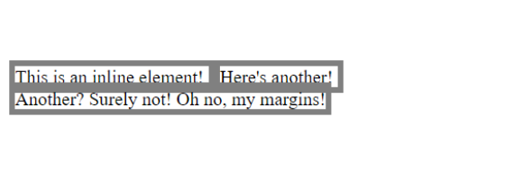
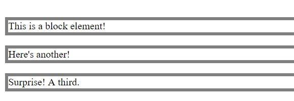
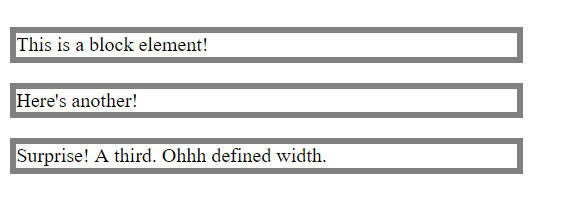
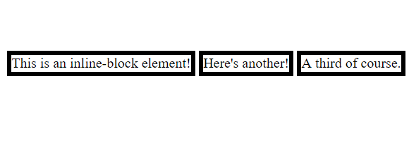
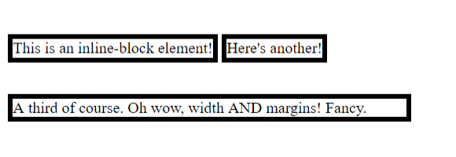

Welcome to my blog post demystifying the differences between inline, block and inline-block in CSS and exploring when and why you might use each. I'll be breaking each down into their individual properties with some images of my own exploration to aid in comprehension. The first thing that's important to understand is that every HTML element works on what's called a 'box model'. This means you can set specific parameters to create more space around the element and other elements, the element and it's border and the content of the element within other elements. When I talk about 'margins' and 'padding' I am referring to this box model style of organising elements. Hope this helps to explain some simple terms that look more convoluted than they really are!
Display: inline
Inline display basically means that it is 'inline' with the other HTML elements around it. The properties of the inline rule are as follows:
- Your inline element can have margins and padding set for the sides, but margins and padding cannot be set for the top and bottom of the element.
- You cannot set the width or height of an inline element.
- Other HTML elements sit either side of an inline element.
- Inline elements do not create 'line breaks'. This means that other elements can nest directly either side of them without starting a new line.


Display: block
Block display is the default of many HTML elements and is extremely easy to manipulate using the box-model due to the following properties:
- Block display respects all set margins and paddings on all sides of your HTML elements. It will not overlap in any way with another element.
- A 'line break' is forced after a block element, meaning the next element will start on the next line.
- If the width is not defined then a block element will take up the full width available.


Display: inline-block
The inline-block display allows the user a little more flexibility by providing a mix of the two other elements. The properties that define and inline-block element are:
- Other HTML elements can sit directly either side of an inline-block element due to it's lack of forced line break.
- Like block display, inline-block respects all margins and padding parameters, including top and bottom. This means this element won't overlap with other HTML elements around it.
- You can set height and width of an inline-block element.
- It basically sits like an inline element but behaves more like a block element in regards to padding, sizing and margins.


So that's the gist of the differences, but why use them? Inline is useful for any elements you want to incorporate more seamlessly into lines of text. Tags like span, string and img use inline display to incorporate HTML and CSS rules directly into their surrounding elements. Block display is useful for any elements that you want to remain in their own lines without any conflicts with other elements. It also give you full control over your box-model so is effective if you're looking for exact control over your element's parameters. Inline-block display gives you the most adaptability and is useful for things like navigation footers since you can create inline box-models and control their padding on all sides. They are all useful in their own ways and playing around with them is quite fun! Thanks for checking out my blog and I hope you've learnt something useful.